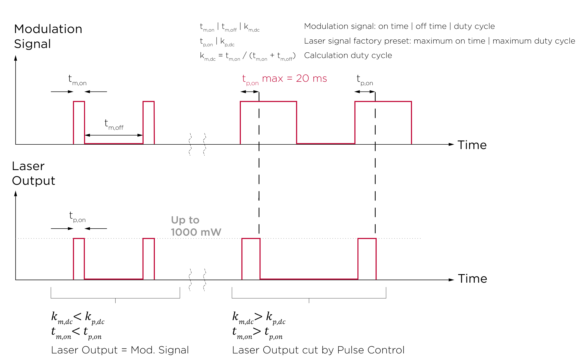
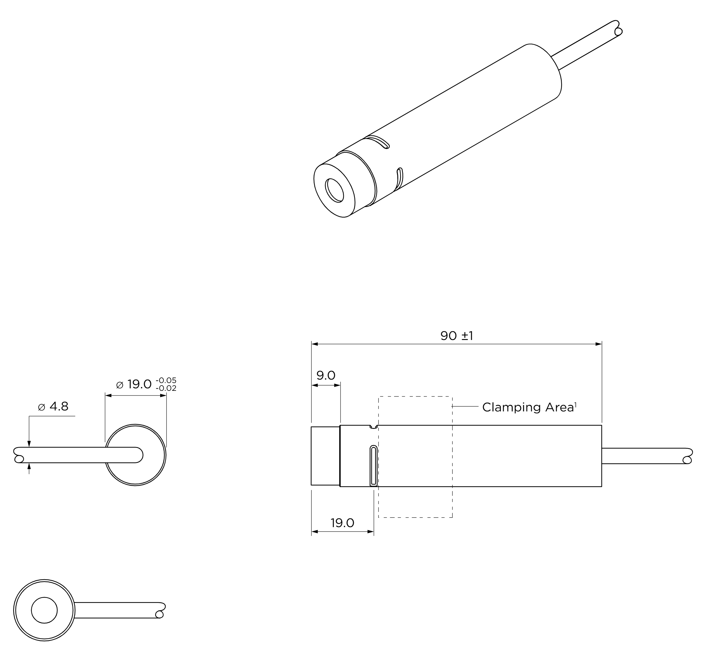
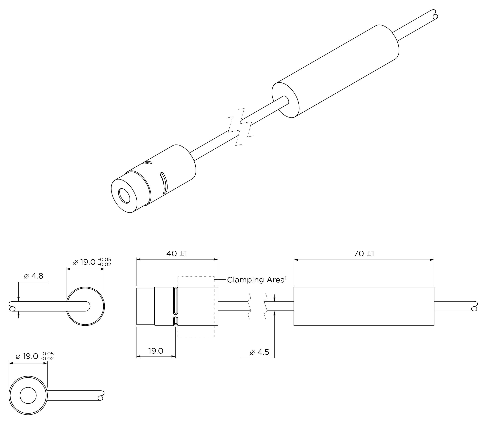

EIN KOMPAKTES LASERMODUL MIT HOHER SPITZENLEISTUNG UND KLEINER BAUGRÖSSE
Das MVpulseHP bietet hohe Spitzenleistungen (bis zu 500 mW bei 525 nm, 660 nm, 808 nm und sogar 1000 mW bei 445 nm), während der Durchmesser bei 19 mm bleibt und das Gehäuse klein ist. Dank der Pulsfunktion kann auf eine aktive Kühlung verzichtet werden. Eine höhere Leistung und damit eine höhere Lichtintensität kann kürzere Belichtungszeiten und einen höheren Durchsatz unterstützen (mehr Bilder pro Sekunde, mehr geprüfte Teile pro Sekunde).
Pulsfrequenz und Tastgrad können an die Anforderungen der Anwendung angepasst werden. Das MVpulseHP ist als Standardausführung (ST) und als 2-Gehäuse-Ausführung (2H) mit getrennten Gehäusen für Optik und Elektronik erhältlich. Zudem stehen verschiedene Öffnungswinkel und zwei unterschiedliche Fokusoptionen zur Verfügung.
MERKMALE
Gepulstes Lasermodul in 4 Wellenlängen mit bis zu 1 W bei 445 nm und 500 mW bei 525 nm, 660 nm und 808 nm
Hohe Pulsleistung ohne aktive Kühlung
Kleines Lasermodul für Beleuchtung mit hoher Intensität
Einstellbare Pulsbreite, abhängig von den Anforderungen der Anwendung
Pulssteuerung durch integrierten Mikrocontroller
Übertemperaturschutz
ANWENDUNGEN
3D-Bildverarbeitung
Industrielle Inspektion im Außenbereich
Schieneninspektion
Stahlinspektion
445 · 525 · 660 · 808
Wellenlänge [nm]
1000 mW
max. Spitzenleistungbei 445 nm
19 mm
Durchmesser
20 µs – 20 ms
Pulslänge
3B
Laserschutzklasse
SerieFLEXPOINT® MVpulseHP
www.blauoptoelektronik.de
Seite 1 von 11
Datenblatt
MVpulseHP
01
Technische Daten
Modell
Linienlaser mit homogener Leistungsverteilung (FOV-Korrektur verfügbar)
Wellenlänge [nm]
445
525
660
808
Wellenlängentoleranz (typ.) [nm]
±10
±7
±7
±10
Wellenlängendrift [nm/K]
≤0.1
≤0.1
≤0.3
≤0.3
Ausgangsleistung (max. Spitzenleistung) [mW]1
500 – 1000
300 – 500
300 – 500
300 – 500
Leistungsstabilität bei 25 °C (nach Aufwärmphase) [%]
≤ 5
Betriebstemperatur (Gehäusetemp.) [°C]2
-10 bis +50
-10 bis +30
-10 bis +30
-10 bis +30
Ausgangsleistung (max. Spitzenleistung)
[mW] · Visualisierung der Tabelle oben
445 nm
500 – 1000
525 nm
300 – 500
660 nm
300 – 500
808 nm
300 – 500
02505007501000
Öffnungswinkel [°]3
Geometrie maßstäblich · Werte aus den technischen Daten
02
Pulsbetrieb
Tastgrad und Pulslänge für die Erhöhung der Spitzenleistung gegenüber dem cw-Betrieb, um eine Abschaltung des Lasers durch Wärmeentwicklung zu vermeiden
Tastgrad
0 – 10 %
Pulslänge
20 µs – 20 ms
Mod.-Frequenz
0 Hz – 4 kHz (höhere Frequenz auf Anfrage) Low 0 V, High 5 V = definierte Spitzenleistung, Eingangsimpedanz von 10 kOhm bei 5 V
SerieFLEXPOINT® MVpulseHP
www.blauoptoelektronik.de
Seite 2 von 11
Datenblatt
MVpulseHP
03
Technische Daten
Fortsetzung
Öffnungswinkel [°]3
5, 10, 30, 45, 60, 75
Fokussierbereich [mm]
50 – 5000
Homogenität der Linienintensität (typ)4 [%]
≤ 30 bezogen auf die mittlere Leistung (innerhalb von 80 % der Linie)
Geradheit der Linie4 [%]
±0.1
Richtungsstabilität [µrad/K]
≤ 10
Strahlrichtungsfehler [mrad]
≤ 10
Betriebsspannung [VDC]
20 – 24
Kommunikationsschnittstelle
RS-232 (0 – 5 V) (optional RS-485)
Modulation
Digitale Modulation ≤ 4 kHz active high (höhere Frequenz auf Anfrage) Low 0 V, High 5 V, Eingangsimpedanz von 10 kOhm bei 5 V
Verzögerung + Anstiegszeit [µs]
<20
Laserschutzklasse
3B (IEC 60825-1:2014, EN 60825-1:2014+A11:2021)
Zusätzliche Schutzfunktionen
ESD Übertemperatur5 Überspannung bis 26 VDC Verpolung bis 30 VDC
Schockfestigkeit
30 G, 6 ms 75 G, 4 ms
Gehäuse
Aluminium (blau eloxiert, potentialfrei) ST-F (Standard) oder 2H-F (getrennte Gehäuse für Optik und Elektronik)
Erhältliches Zubehör(optional, separat zu bestellen)
Halterung
Anschluss
Offene Litzen (500 mm) Rot: +VDC; Schwarz: GND; Grün: MOD; Gelb: RX; Blau: TX; Braun: GND COM Lila/Orange: Reserviert - nicht zur Verwendung durch den Kunden 150 mm Kabel zwischen den Gehäusen bei 2H
Fußnoten 1 Die Ausgangsleistung ist hinter der Optik definiert, d. h. am Strahlaustritt des Lasermoduls 2 Unter 0 °C muss Kondensatbildung vermieden werden (aufgrund optischer und elektronischer Komponenten) 3 Öffnungswinkel: Definiert durch die Enden der Laserlinie mittels FWHM bezogen auf die mittlere Leistung (innerhalb von 80 % der Linie) 4 Homogenität der Linienintensität und Geradheit der Linie werden bei 80 % des Öffnungswinkels gemessen 5 Übertemperatur: Der Laser wird automatisch abgeschaltet, wenn die Temperatur in der Laserdiode eine definierte Temperatur überschreitet. Das Wiedereinschalten erfolgt mit einer Hysterese von 5K
SerieFLEXPOINT® MVpulseHP
www.blauoptoelektronik.de
Seite 3 von 11
Datenblatt
MVpulseHP
04
Liniendicke und Tiefenschärfe (DOF)
für die Standard-Fokusoption (STD) bei 660 nm
Kennlinie Standard-Laserlinie (kurzer Bereich)
Kennlinie Standard-Laserlinie (großer Bereich)
Diagrammbeschriftung: Line Thickness = Liniendicke · Depth of Focus = Tiefenschärfe · Focus Distance = Fokusabstand
05
Fokusoptionen
Das MVpulseHP ist mit verschiedenen Fokusoptionen erhältlich, um je nach Anwendung die passende Kombination aus Liniendicke und Tiefenschärfe zu erreichen.
Die in der folgenden Tabelle angegebenen Werte sind Faktoren, die in Kombination mit dem obigen Diagramm zu verwenden sind.
Pout und λ
Fokusoptionen (Umrechnungsfaktor bezogen auf den rot markierten Standardlaser)
λ
P_out
Δλ
STD
DL
[nm]
[mW]
[nm]
LT
DOF
LT
DOF
445
500 – 1000
±10
0.97
1.39
0.69
0.71
525
300 – 500
±7
1.15
1.68
0.78
0.78
660
300 – 500
±7
1.00
1.00
0.76
0.58
808
300 – 500
±10
1.27
1.32
0.98
0.79
Fußnote / Abkürzungen
LT= Liniendicke (Line Thickness)DOF= Tiefenschärfe (Depth of Focus)STD= Standard, guter Kompromiss zwischen Liniendicke und TiefenschärfeDL= Dünne Linie (Thin Line)FD= Fokusabstand (Focus Distance)
SerieFLEXPOINT® MVpulseHP
www.blauoptoelektronik.de
Seite 4 von 11
Datenblatt
MVpulseHP
06
Puls- und Überwachungs-/Steuerungsfunktionen
Aktueller Standard der Pulsfunktion: Jedes Modulationssignal führt zu einem Laserpuls, Pulslänge / Tastgrad werden jedoch zur Temperaturregelung angepasst, d. h. die Pulslänge kann kürzer sein als das Modulationssignal
Tastgrad und Pulslänge werden werkseitig voreingestellt und können an Ihre Anwendung angepasst werden
Die Pulssteuerung kann auf Anfrage angepasst werden

Diagrammbeschriftung: Modulation Signal = Modulationssignal · Laser Output = Laserausgang · Time = Zeit · Up to 1000 mW = bis zu 1000 mW · Laser Output = Mod. Signal = Laserausgang entspricht Modulationssignal · Laser Output cut by Pulse Control = Laserausgang durch Pulssteuerung begrenzt
07
Funktionen der Pulssteuerung
Die Treiberelektronik des MVpulseHP überwacht und steuert die Pulsmodulationsfunktion automatisch. Innerhalb der werkseitig voreingestellten Grenzen für Tastgrad und Pulslänge erkennt die Modulationssteuerung zuverlässig steigende und fallende Flanken, sodass das Lasersignal dem Modulationssignal folgt. Legt der Anwender an den Modulationseingang des Lasers einen höheren Tastgrad oder eine längere Pulslänge an, die den werkseitig voreingestellten Maximalparameter überschreiten würde, begrenzt die Treiberelektronik die Pulslänge automatisch. Siehe die Beispiele unten
Abbildung 1: Pulsschema Modulationseingang gegenüber Laserausgang bei Standardbetrieb innerhalb der werkseitig voreingestellten Parameter und gegenüber Laserausgang.
Maximale Zeit für tp,on beträgt 20 ms
Abbildung 2: Pulsschema Modulationseingang gegenüber Laserausgang mit Pulslängenbegrenzung durch die werkseitig voreingestellte maximale Pulslänge für einen Anwendungsfall mit langem tm,off
Maximale Zeit für tp,on = 20 ms
Tastgrad und Pulsfunktion sind werkseitig eingestellt, werden aber auf Ihre Anwendung, z. B. Ihre Kameraeinstellungen, abgestimmt. Sollte die angegebene Pulsfunktion nicht Ihren Erwartungen entsprechen, besprechen wir gerne eine alternative Programmierung.
Diagrammbeschriftung Abb. 1 und 2: Modulation Signal = Modulationssignal · Laser Output = Laserausgang · Time = Zeit · Laser Output = mod. Signal = Laserausgang entspricht Modulationssignal · Laser Output Cut by Pulse Control = Laserausgang durch Pulssteuerung begrenzt
SerieFLEXPOINT® MVpulseHP
www.blauoptoelektronik.de
Seite 6 von 11
Technische Erläuterung · White Paper
MVpulseHP
08
Elektronischer Schutz (Überhitzung)
Das Modul verfügt über einen integrierten elektronischen Überhitzungsschutz. Dieser wird aktiviert, wenn die Temperatur der Laserdiode die werkseitig voreingestellte Maximaltemperatur der Laserdiode überschreitet. Das Ein- und Ausschalten des elektronischen Schutzes unterliegt einer Hysterese mit einer Temperaturdifferenz von 5 Kelvin, die für die Abkühlphase genutzt wird. Fällt die Temperatur nach dem Auslösen des elektronischen Schutzes unter die Einschalttemperatur, schaltet sich das Modul automatisch wieder ein.
Abbildung 3: Schema der Laserdiodentemperatur über der Zeit mit elektronischem Schutz durch die werkseitig voreingestellte maximale Laserdiodentemperatur. Diagrammbeschriftung: Temperature Laser Diode = Temperatur Laserdiode · Laser Output = Laserausgang · Laser Output Cut by Electronic Protection = Laserausgang durch elektronischen Schutz unterbrochen · Time = Zeit
Die Pulsfunktion ist so ausgelegt, dass eine Überhitzung der Laserdiode vermieden wird. Das Risiko einer Überhitzung lässt sich weiter minimieren, indem das Modul gemäß Zeichnung montiert / geklemmt wird und eine Metallklemmung sowie Wärmeleitpaste verwendet werden. Sorgen Sie in Ihrer Anwendung für eine ausreichende Wärmeableitung. (Clamping Area = Klemmbereich)
09
Kommunikation
Das Modul verfügt über eine RS-232-Schnittstelle mit 0-5 V (RS485 optional), um Parameter auszulesen und zu ändern. Einem MVpulseHP-Modul kann vom Anwender eine eigene Seriennummer zwischen 1 und 255 zugewiesen werden. Die werkseitig voreingestellte Seriennummer ist 1. Mit der RS485-Option können die Module an ein Bussystem angeschlossen und über ihre jeweilige Seriennummer adressiert werden. Die Seriennummer muss jedem Modul vor dem Einsatz im Bussystem bei der Einrichtung des Busses individuell zugewiesen werden.
RS-232/RS485-Parameter:
Baudrate
= 115200 1/s
Paritätsbit
= Keine
Datenbit
= 8
Stoppbit
= 1
Flusskontrolle
= Keine
SerieFLEXPOINT® MVpulseHP
www.blauoptoelektronik.de
Seite 7 von 11
Technische Erläuterung · White Paper
MVpulseHP
10
Befehlsstruktur
Befehlsstruktur: Alle Befehle beginnen entweder mit „#“, gefolgt von der vom Kunden festgelegten 3-stelligen Seriennummer, oder mit „#000“, das unabhängig von der Seriennummer für jedes Modul funktioniert. Alle gesendeten Befehle enden mit dem Zeichen NULL \0. Jede Antwort endet mit dem Zeichen \r.
Befehl
Erläuterung
Beispiel
Antwort
Erläuterung Antwort
getIdcurrent
gibt den Strom durch die Laserdiode beim letzten Puls in mA zurück
#000getldcurrent
1300\r
1300mA
getIdtemp
gibt die Temperatur der Laserdiode in °C*100 zurück
#000getldtemp
3400\r
34.0°C
getserial
gibt die 3-stellige Seriennummer des Moduls zurück
#000getserial
233\r
Seriennummer 233
gethours
gibt die Dauer in Stunden zurück, die das Lasermodul an einer Spannungsversorgung angeschlossen war
#000gethours
3400\r
Modul war 3400 Stunden an die Spannungsversorgung angeschlossen
geterror
gibt einen Fehlercode zurück
#000geterror
1\r
0: Laser ok, 1: Laser Übertemperatur
setserial[1-255]
setzt die Seriennummer
#000setserial255
255\r
setzt die Seriennummer auf 255
11
Fokussiermechanismus
Der Fokusabstand der homogenen Laserlinie kann mit dem mitgelieferten Stiftwerkzeug eingestellt werden. Stecken Sie den Stift in eine der Bohrungen des Innenrings und drehen Sie ihn im/gegen den Uhrzeigersinn. Der Fokusabstand verringert/vergrößert sich.
Bildbeschriftung: Bore in focus slit = Bohrung im Fokusschlitz · Clockwise: Near = Im Uhrzeigersinn: nah · Counter-clockwise: Far = Gegen den Uhrzeigersinn: fern
12
Installation und Betrieb
Achtung! Bitte beachten Sie beim Einbau des Lasermoduls den Klemmbereich und das Datenblatt. Die Klemmbereiche unterscheiden sich je nach Lasermodultyp. Sorgen Sie für eine ausreichende Wärmeableitung, indem Sie an der angegebenen Position klemmen und Wärmeleitpaste auf die Kontaktfläche zwischen Modul und Halterung auftragen. Wenn Sie sich bei der Montage des Moduls unter den gegebenen Bedingungen (z. B. Umgebungstemperatur, umgebende Geräte usw.) unsicher sind, kontaktieren Sie uns bitte.
SerieFLEXPOINT® MVpulseHP
www.blauoptoelektronik.de
Seite 8 von 11
Datenblatt
MVpulseHP
13
Technische Zeichnung
MVpulseHP ST-F
MVpulseHP mit Standardgehäuse und Fokussiermechanik
Einheiten: mm

1 Für eine optimale Wärmeableitung in einer Halterung empfehlen wir, Wärmeleitpaste auf die Kontaktfläche aufzutragen. Zeichnungsbeschriftung: Clamping Area = Klemmbereich Einheiten: mm
SerieFLEXPOINT® MVpulseHP
www.blauoptoelektronik.de
Seite 9 von 11
Datenblatt
MVpulseHP
14
Technische Zeichnung
MVpulseHP 2H-F
MVpulseHP mit 2 Gehäusen, fokussierbar
Einheiten: mm

1 Für eine optimale Wärmeableitung in einer Halterung empfehlen wir, Wärmeleitpaste auf die Kontaktfläche aufzutragen. Zeichnungsbeschriftung: Clamping Area = Klemmbereich Einheiten: mm
SerieFLEXPOINT® MVpulseHP
www.blauoptoelektronik.de
Seite 10 von 11
Datenblatt
MVpulseHP
15
Bestellschlüssel
FP-MVpulseHP
Gehäuse
X
ST
2H
Wellenlänge [nm]
X
445
525
660
808
Spitzenleistung [mW]
X
300 – 500
1000 (nur 445 nm)
Modulation
X
MI | Digitale Modulation invertiert, active high
Öffnungswinkel [°]
X
5
10
30
45
60
75
Fokus [mm]
X
F
Optik
X
STD
DL
Beispiel:FP-MVpulseHP-ST-660-500MI-60-F-STD
Inhaltliche Grundlage: FLEXPOINT® Machine Vision Laser – MVpulseHP Series with Pulse Control (03/25 / V02) und White Paper MVpulseHP (09/24 / V1).
Interesse an MVpulseHP?Kontaktieren Sie uns für weitere Informationen, technische Beratung oder ein individuelles Angebot.